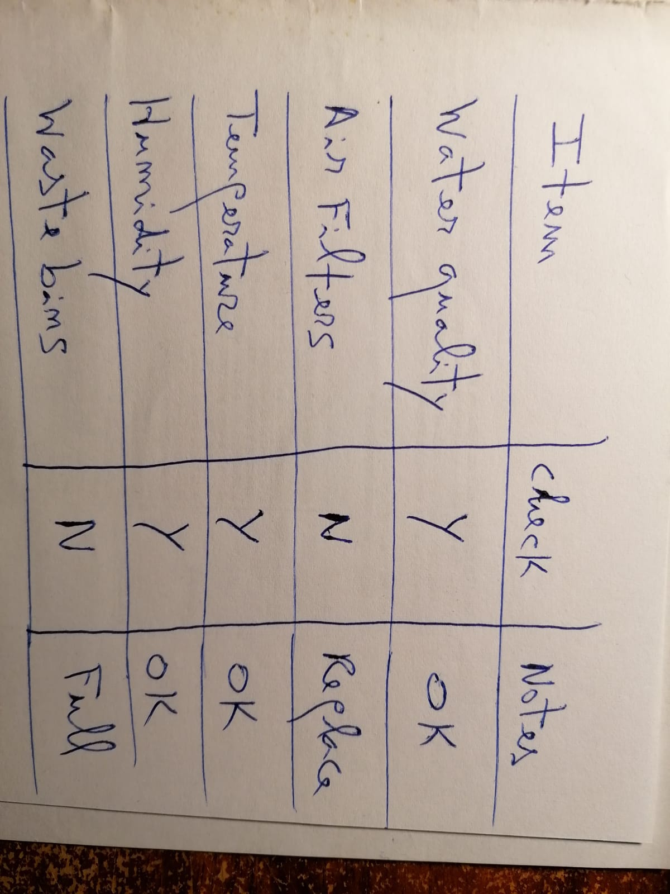
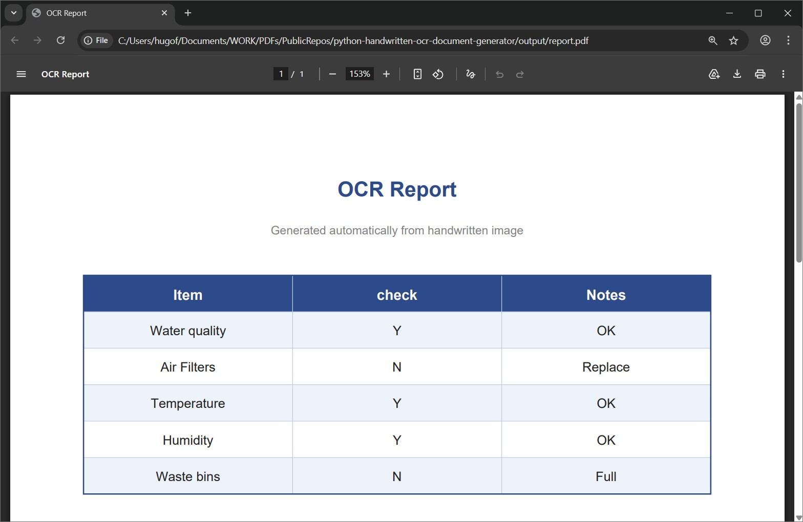
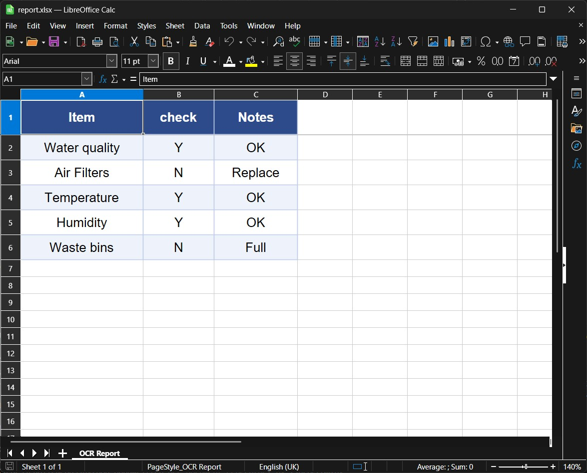
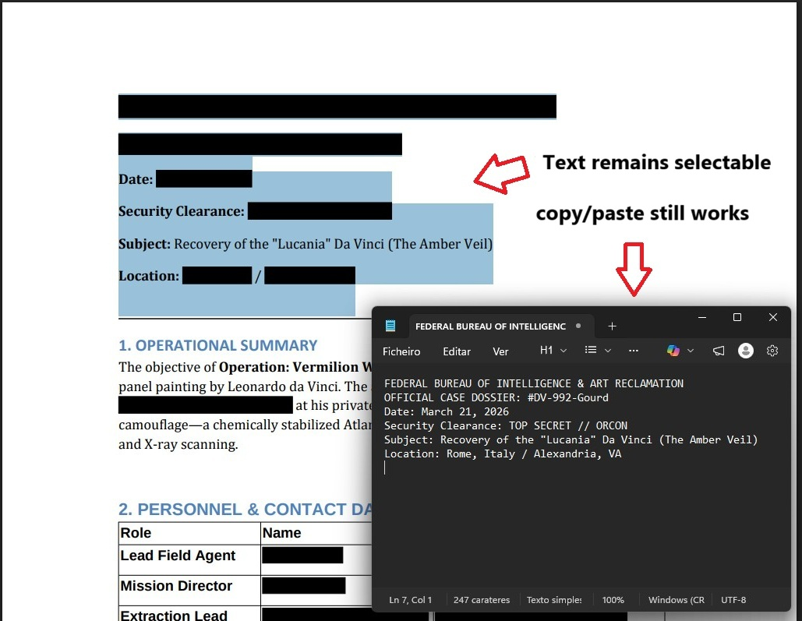
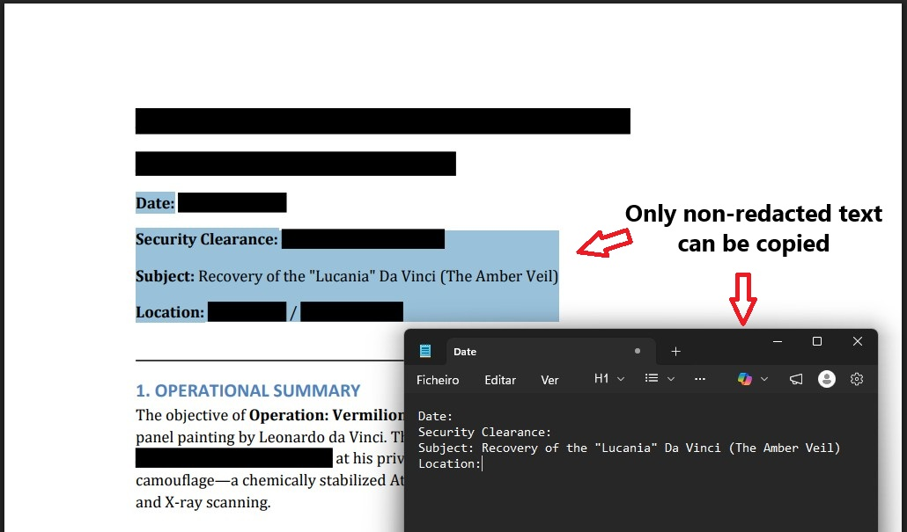
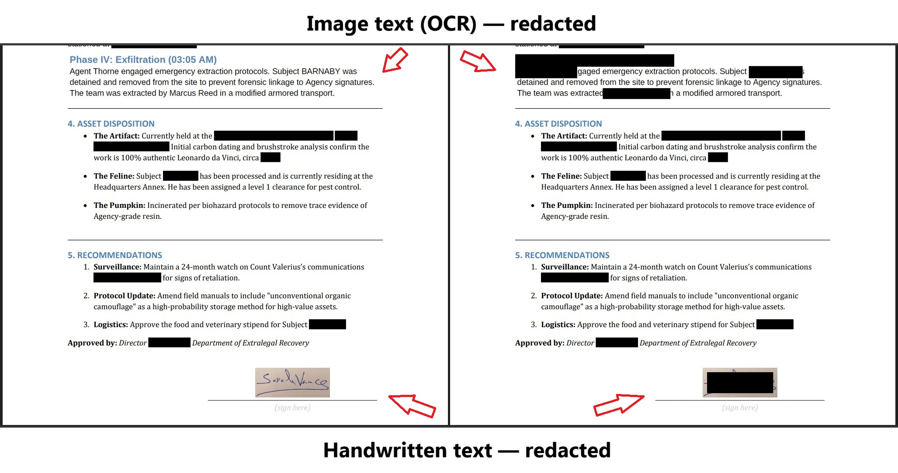
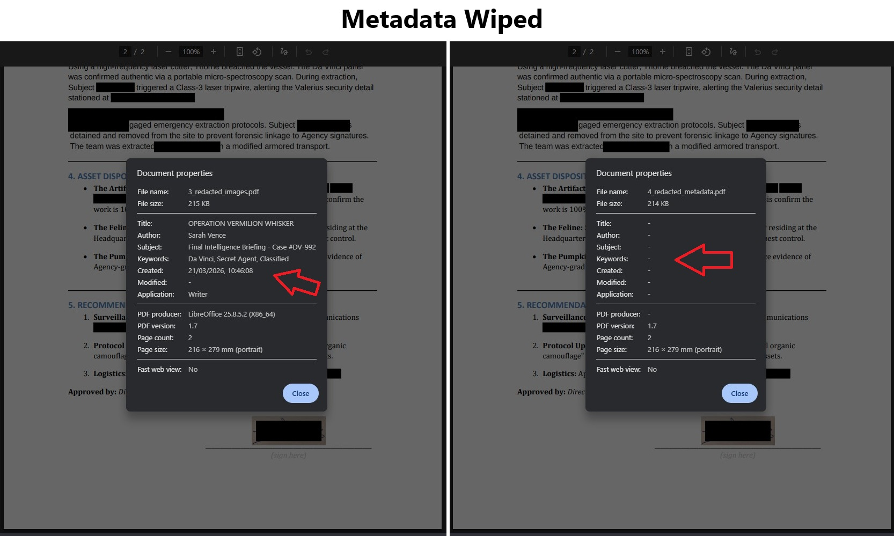

Python PDF Automation – Examples and Real Projects
I specialize in PDF automation with Python, using ReportLab and PyMuPDF. Here you'll find real-world examples, complete courses, and production tools for generating and manipulating PDFs.
Explore my latest projects and technical demonstrations.
Automated Invoice Generation
Example of a production-style invoice generator built with Python. This type of system can generate thousands of invoices automatically from databases or ERP systems.

This example demonstrates automated PDF invoice generation using ReportLab in Python. Features include multi-page pagination, repeating table headers, VAT calculations, branded layouts, and BytesIO streaming for API integration. No HTML, no headless browser — pure Python, deterministic output every time.
Fillable PDF Form Generator
Example of a production-style fillable PDF form built entirely in Python — no Acrobat, no Word export. Interactive fields, checkboxes, and a signature area, generated programmatically with pixel-perfect layout control.
This example demonstrates programmatic AcroForm generation using ReportLab in Python. Features include coordinate-based layout, named text fields, toggle checkboxes, a signature area, and branded section headers — all produced from a single script with no external tools or manual steps.
PDF Invoice Data Extraction — PDF to Excel
A real-world invoice from an external source, processed entirely with Python. The script locates each data region dynamically — no hardcoded coordinates.
This example demonstrates a complete Python PDF automation pipeline: extracting structured data from a real-world invoice using pdfplumber, dynamic bounding box detection, and exporting to a formatted Excel report using openpyxl. No hardcoded coordinates — the script adapts to the document layout automatically.
Handwritten OCR — Export to PDF, Excel and Word
A real photo taken with a mobile phone, processed entirely with Python. Image orientation is corrected automatically before sending to Google Gemini.

Handwritten Photo
A real photo taken with a mobile phone — imperfect, rotated, cursive handwriting.

PDF Output
Printable report with title, styled table and footnote, generated with ReportLab.

Excel Output
Formatted workbook with frozen header, alternating rows and auto-sized columns.
This pipeline detects and corrects EXIF image orientation automatically, sends the image to Google Gemini, and parses the structured response into PDF, Excel and Word — no hardcoded templates, no manual data entry. Tested against EasyOCR, which failed on cursive handwriting with confidence scores below 10%.
PDF Sensitive Data Redaction — Text, Images & Metadata
A complete case study on what actually happens when you ask AI chatbots to redact a PDF — and why a specialised pipeline is needed to do it correctly.
"Can't I just ask ChatGPT to redact my PDF?" — Tested. Here's what happened.

The False Redact Trap
Black boxes drawn over text — but the data is still there. Copy/paste extracts everything.

True Text Redaction
Sensitive text permanently removed from the PDF structure. Only non-redacted content can be copied.

Image Redaction (OCR)
Sensitive text inside embedded images located via OCR and permanently overwritten. Handwritten content redacted as a safe fallback.

Metadata Wiped
Author, title, keywords, creation date and software fingerprint removed from the final file.
Four AI chatbots were tested with the same document and the same request. Gemini and Mistral refused to produce a PDF. Copilot returned the original file unchanged and claimed it had been fully redacted. ChatGPT made three attempts — the best result still left names visible, dropped words mid-sentence, and ignored images. This pipeline uses AI only for classification (Google Gemini) and specialised libraries for precision editing (PyMuPDF, EasyOCR) — each tool doing only what it is good at.
Learn from my Mistakes
Skip the months of headache. I've distilled my entire PDF automation workflow into these step-by-step courses.
Python PDF Generation: From Beginner to Winner
A hands-on journey based on real client projects. I’ve spent months distilling my professional workflow into this course, so you can skip the frustration of broken layouts.
- ✔ Tables, Paragraphs & Flowables
- ✔ Security (Passwords & Permissions)
- ✔ Watermarking
- ✔ Forms (Checkboxes, Textfields, etc)
- ✔ Add JavaScript to PDFs
- ✔ Django Integration
"This is the result of years of trial and error, structured to make you a winner."
Python PDF Handling: From Beginner to Winner
Master the art of PDF manipulation and reverse-engineering. This course goes beyond simple scripts—I’ll teach you how to explore documentation and debug source code to solve impossible tasks. From metadata extraction to advanced page surgery, you'll learn to control every byte of a PDF file.
- ✔ Text & Image Extraction (TXT/PNG)
- ✔ Page Surgery (Rotate, Crop, Resize)
- ✔ Split, Merge & Watermark
- ✔ AI Text Recognition (OCR) from Scans
- ✔ Snapshots & High-Speed Processing
- ✔ Deep-Dive Debugging Skills
"Don't just use a library—learn how to unravel complex problems when no one else has the answer."
Production-Ready Tools
Don't waste days fighting PDF layout engines. Use the same billing systems I've built for professional SaaS projects.
Multi-Page Invoice Generator (Pro)
A deterministic billing engine for Python APIs. Stop dealing with unpredictable HTML-to-PDF tools. This engine handles complex pagination, repeating headers, and international typography natively.
- ✔ Multi-page Flowables (Auto-headers)
- ✔ API-Friendly (BytesIO Streaming)
- ✔ Unicode & International Fonts
- ✔ QR Codes for Payments
- ✔ Page X of Y & Legal Layouts
- ✔ No Headless Browser Required
"Built for developers who need invoices that behave predictably in production."
Need a specific solution?
If you have a unique PDF challenge or need a specific template that isn't listed here, I'm happy to help.
Whether it's a quick question or a custom project, let's see if we can work together to solve it.
Get in Touch
Have a question about a course or product? Let's talk.